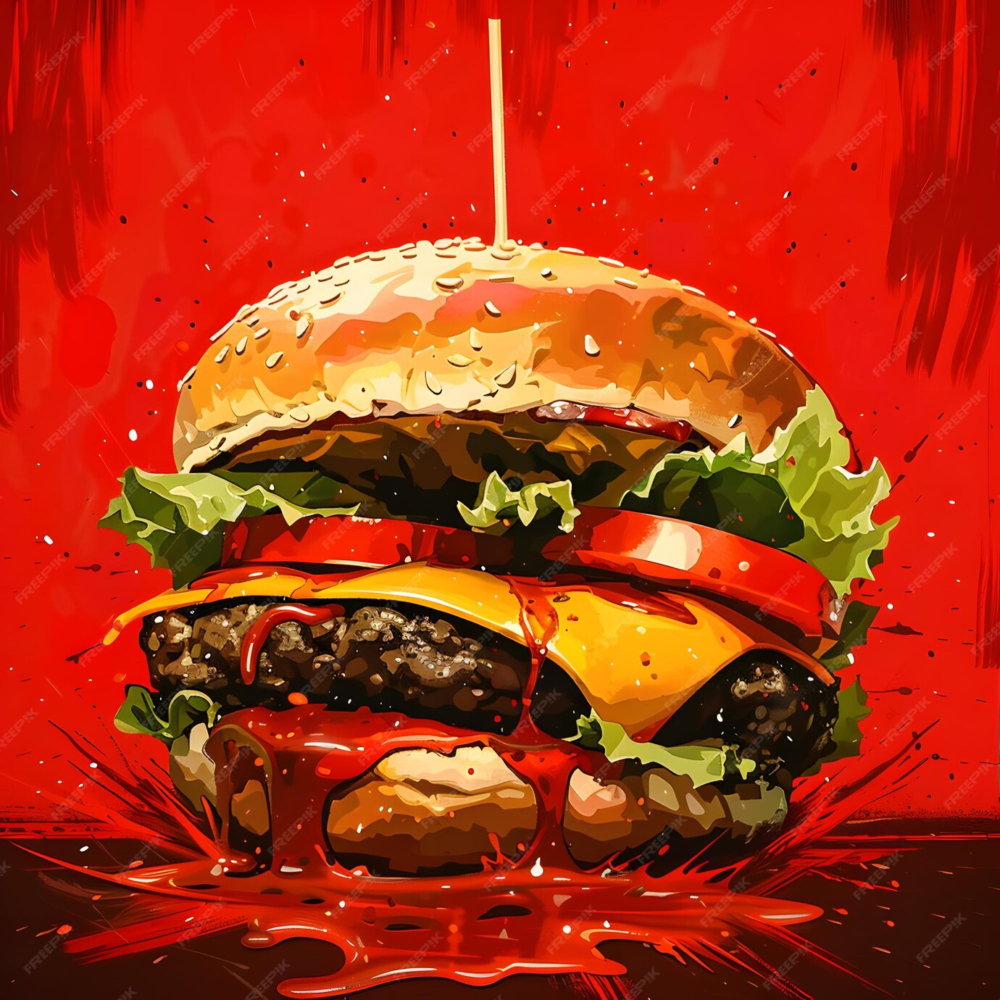

Smash Burgers

Description
this smash burger recipe will satisfy your cravings for a perfect smash
burger and also stay within calories whilst hitting your macros. perfect
recipe for a healthy cheat day
Macros
- Calories: 400
- Protein: 30g
- Carbs: 25g
- Fat: 10-12g
Ingredients
- 500g lean ground beef
- 4 smart/low carb burger buns
- 4 slices low fat cheese
- lettuce, tomatoes, pickles
- sugar free ketchup, light mayo
- salt, pepper
Steps
- season ground beef in mixing bowls and form balls
- preheat pan on high heat with light spray of cooking oil
- place ball into pan and smash and smear hard
- cook for 2-3 minutes until edges are crisp, then flip
- add cheese on top and place lid on pan (optional)
- assemble burger
- serve